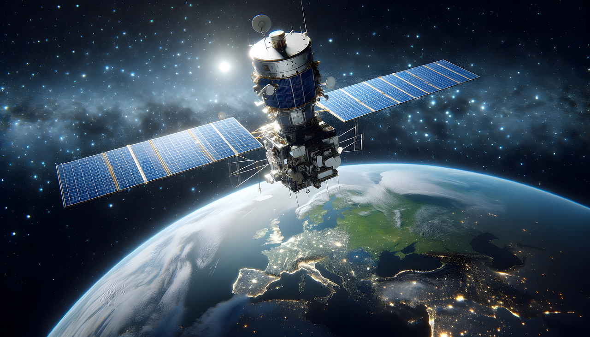
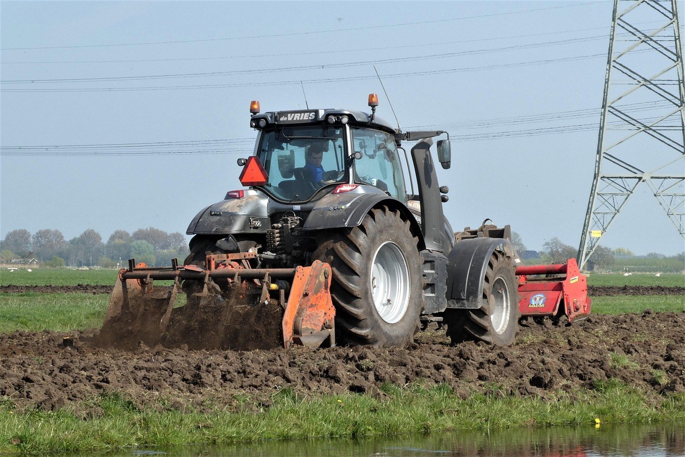

A utilização de internet via satélite faz com que pessoas que moram em
áreas rurais ou em áreas sem acesso à internet possam utilizar de todas
as maravilhas da tecnologia da informação, como se comunicar com outras
pessoas, estudar e aprender bastante.
A internet via satélite tem se mostrado uma solução revolucionária para
conectar zonas rurais e locais remotos que, por muito tempo,
permaneceram à margem da era digital. Enquanto nas grandes cidades a
fibra óptica e as redes 4G/5G são onipresentes, a vastidão do campo e
regiões isoladas apresentam desafios logísticos e de infraestrutura que
as tecnologias tradicionais não conseguem superar. É aí que o satélite
entra em cena, prometendo acesso à informação e a serviços essenciais
para milhões de pessoas.


A chegada da internet via satélite em áreas rurais e sem acesso abre um
leque de oportunidades: Educação: Alunos e professores têm acesso a
plataformas de ensino a distância, bibliotecas virtuais e recursos
educacionais globais, diminuindo a disparidade educacional. Economia:
Produtores rurais podem acessar informações sobre preços de commodities,
vender seus produtos online e utilizar tecnologias para otimizar suas
colheitas, impulsionando a economia rural. Segurança: A comunicação em
áreas remotas é crucial em situações de emergência, facilitando o
acionamento de socorro e a coordenação de esforços.